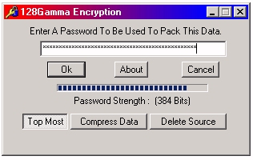

The 128Gamma password dialog appears after you have selected the files or folders you want to encrypt. The empty text box is where you type the password you want to encrypt the file with. The password must be at least 8 characters and no more than 56 characters. The password strength status on this dialog tells you how strong the length of your password is, the longer the password the safer the data. To make this dialog stay on top of all other windows click the "Top Most" button. If you want to compress the data you are encrypting you can click the "Compress Data" button. If you want to delete the files you are encrypting and keep only the encrypted data click the "Delete Source" Button. Use the "Delete Source" button with caution. If you encrypt your files, delete the source and lose your password, Your files are gone. NetWorkDLS cannot help you retrieve your files.